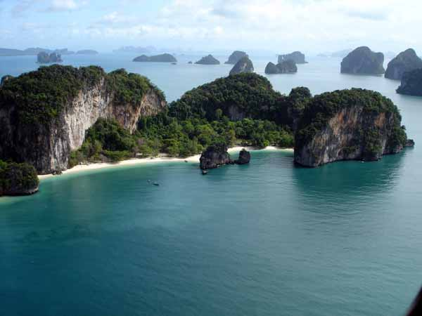
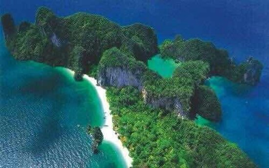
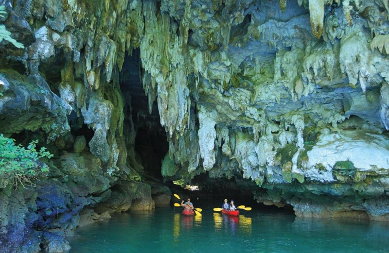
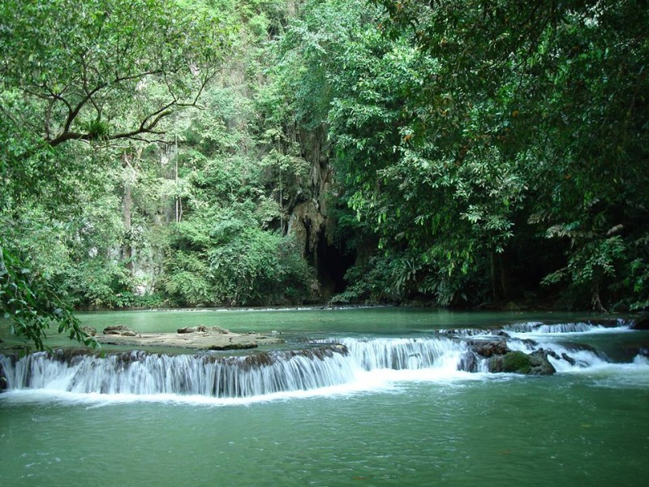
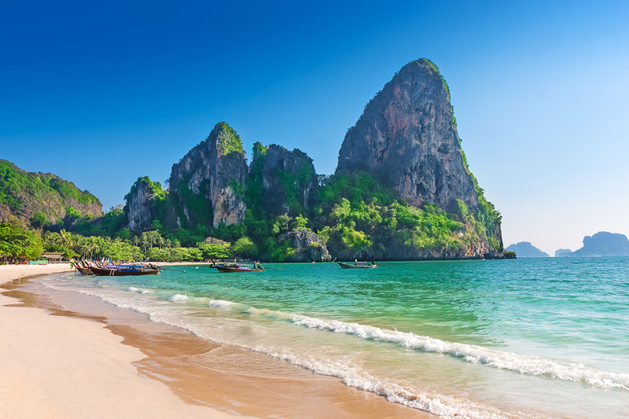
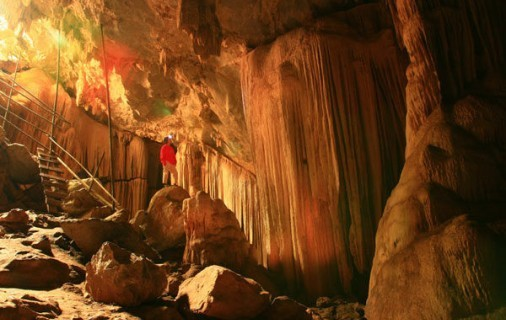
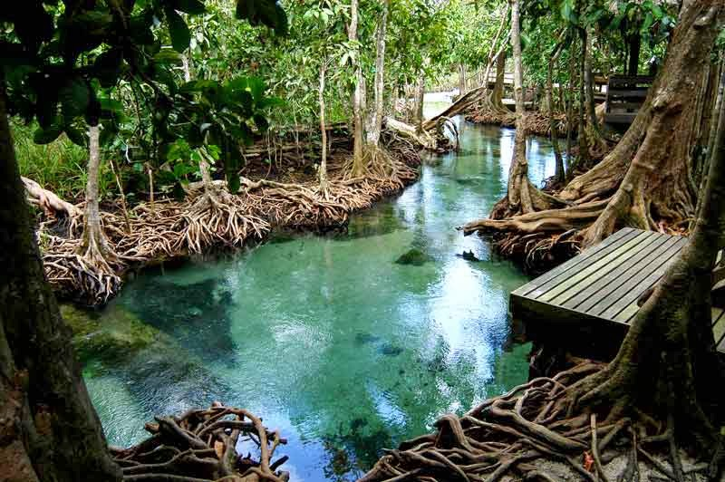

ดินแดนชายฝั่ง "จมตัว" แห่งทะเลอันดามัน ที่ซ่อนถ้ำหินปูน ภาพเขียนยุคก่อนประวัติศาสตร์ และแอ่งน้ำสีมรกตไว้อย่างน่าค้นหา
ภูมิประเทศแบบคาสต์ (Karst Topography) คือภูมิประเทศที่พบในบริเวณที่มี หินปูน ยิปซัม หรือหินที่ละลายน้ำได้ ส่วนใหญ่ประกอบด้วยหินผุ หลุมยุบ (doline) ธารน้ำใต้ดิน และถ้ำ [กองสำรวจดิน]
ภาคใต้ของไทยมีลักษณะเด่นเป็น "คาสต์หอคอย" (Tower Karst) ซึ่งเป็นหอคอยหินปูนที่มีด้านข้างสูงชันเกือบตั้งฉากหรือยื่นล้ำ (overhanging) เกิดจากการกัดกร่อนของน้ำบริเวณฐานหอคอย ควบคู่กับการยกตัวของเปลือกโลก [showcaves.com] [SIUE]
หินปูนในคาบสมุทรไทยเป็นส่วนหนึ่งของ กลุ่มหินราชบุรี (Ratburi Group) ที่สะสมตัวในยุคเพอร์เมียน เมื่อประมาณ 286–245 ล้านปีก่อน มีสีเทาอ่อนและมีซากฟอสซิล เมื่อโผล่พ้นน้ำจะกลายเป็นสันเขาและหอคอยหินปูนที่โดดเด่น [SIUE]
จังหวัดกระบี่ ตั้งอยู่บนฝั่งทะเลอันดามัน ตอนบนของภาคใต้ มีพื้นที่ทั้งหมดราว 4,708 ตร.กม. แบ่งการปกครองเป็น 8 อำเภอ โดยมีพื้นที่ส่วนใหญ่เป็นภูเขาหินปูนและป่าดิบชื้น ที่มีความสำคัญทางธรณีวิทยาอย่างยิ่ง [วิกิพีเดีย]
จุดเด่นทางภูมิศาสตร์ของกระบี่คือเป็นจังหวัดที่มี ภูมิประเทศคาสต์หอคอยที่สมบูรณ์ที่สุดแห่งหนึ่งของประเทศไทย ไม่ว่าจะเป็นเขาพนมเบญจา ถ้ำผีหัวโต ถ้ำผ้าม่าน ธารโบกขรณี ไปจนถึงหาดทรายรายเลย์ ที่ล้วนเกิดจากหินปูนยุคเพอร์เมียนก้อนเดียวกัน [Thai PBS]

จุดเด่นทางภูมิศาสตร์และธรณีวิทยาที่ทำให้กระบี่เป็นแหล่งคาสต์ชั้นนำของประเทศไทย

ชายฝั่งทะเลอันดามันของกระบี่เป็นชายฝั่งประเภทจมตัว ทำให้มีหาดทรายน้อยและไหล่ทวีปลาดชัน เกิดอ่าวเว้าลึกและเกาะหินปูนกระจายตามชายฝั่งจำนวนมาก [Thai PBS]

ถ้ำผีหัวโตในอำเภออ่าวลึก มีภาพเขียนสียุคก่อนประวัติศาสตร์กว่า 100 ภาพ เป็นหลักฐานสำคัญของมนุษย์ยุคหินในภาคใต้ [ม.เกษตรศาสตร์]

แอ่งน้ำสีมรกตท่ามกลางหุบเขาหินปูนและป่าดิบชื้น ในเขตอุทยานแห่งชาติธารโบกขรณี เกิดจากธารน้ำใต้ดินในพื้นที่คาสต์ [Thai PBS]

ภูเขาหินปูนโดดสูงชันที่โผล่จากที่ราบ ทะเล และหาดทราย อย่างไร่เลย์และเกาะพีพี เป็นคาสต์หอคอยที่สมบูรณ์แบบที่สุดแห่งหนึ่งของโลก [showcaves.com]

โถงถ้ำหินปูนที่มีหินงอกหินย้อยสะสมตัวเป็นผ้าม่านงดงาม อีกทั้งยังมีถ้ำเสือ ถ้ำสร้อยเสียง กระจายทั่วพื้นที่จังหวัด [ที่ว่าการอำเภออ่าวลึก]

คลองท่าปอมในอำเภออ่าวลึก รวมระบบนิเวศน้ำจืด น้ำกร่อย น้ำเค็ม ป่าพรุ ป่าชายเลน และป่าดิบชื้นไว้ในพื้นที่เดียว [Thai PBS]
คลิกที่ Marker หรือรายชื่อด้านซ้าย เพื่อดู รูปภาพและคำอธิบาย ของแต่ละแห่ง
ข้อมูลทั้งหมดคัดกรองจากหน่วยงานราชการ สื่อสารคดี และแหล่งวิชาการ เพื่อความน่าเชื่อถือ
ข้อมูลแหล่งท่องเที่ยวในอำเภออ่าวลึก : ถ้ำผ้าม่าน หาดอ่าวชิ้งชั้ง ตุคนทราย อ่าวเหนา เขาเหล็กโคน
http://www.aoluek.go.th/travel/สารคดีเรื่องกระบี่/อ่าวลึก : ชายฝั่งจมตัว (Submerged Shoreline) ถ้ำผีหัวโต และธารโบกขรณี
podcast.thaipbs.or.thนิยามภูมิประเทศแบบคาสต์ : หินปูน/ยิปซัมที่ละลายน้ำได้ ประกอบด้วยหลุมยุบ (doline) ธารน้ำใต้ดิน และถ้ำ
oss101.ldd.go.thข้อมูลกลุ่มหินราชบุรี (Ratburi Group) ยุคเพอร์เมียน 286–245 ล้านปี และการเกิดคาสต์หอคอยในคาบสมุทรไทย
siue.eduอธิบายการเกิดคาสต์หอคอย (Tower Karst) ที่เกิดจากการกัดกร่อนฐานหอคอยและการยกตัวของเปลือกโลก
showcaves.comการศึกษาสภาพธรณีสัณฐานและภาพเขียนสี อ่าวลึก จังหวัดกระบี่ เพื่ออธิบายการย้ายถิ่นฐานของมนุษย์ยุคก่อนประวัติศาสตร์
research.ku.ac.thข้อมูลเขตการปกครอง 8 อำเภอ พื้นที่ 4,708 ตร.กม. และลักษณะภูมิประเทศของจังหวัดกระบี่
th.wikipedia.org